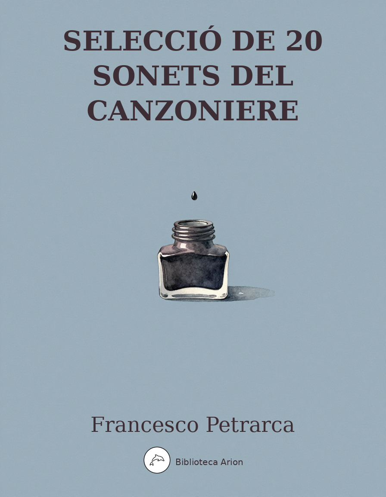

Selecció de Sonets del Canzoniere
Rerum Vulgarium Fragmenta (selecció)
Selecció de setze sonets cèlebres del Canzoniere de Petrarca, obra fundacional de la lírica europea moderna. Temes d'amor per Laura, reflexió sobre el temps, i recerca espiritual.
Canzoniere — Selecció de Sonets
Francesco Petrarca (1304–1374)
Font: Rerum Vulgarium Fragmenta (Canzoniere), text de Wikisource (it.wikisource.org) Llengua: italià
Sonet I (RVF 1)
Voi ch’ascoltate in rime sparse il suono di quei sospiri ond’io nudriva ‘l core in sul mio primo giovenile errore quand’era in parte altr’uom da quel ch’i’ sono,
del vario stile in ch’io piango et ragiono fra le vane speranze e ‘l van dolore, ove sia chi per prova intenda amore, spero trovar pietà, nonché perdono.
Ma ben veggio or sì come al popol tutto favola fui gran tempo, onde sovente di me medesmo meco mi vergogno;
et del mio vaneggiar vergogna è ‘l frutto, e ‘l pentersi, e ‘l conoscer chiaramente che quanto piace al mondo è breve sogno.
Sonet III (RVF 3)
Era il giorno ch’al sol si scoloraro per la pietà del suo factore i rai, quando i’ fui preso, et non me ne guardai, ché i be’ vostr’occhi, donna, mi legaro.
Tempo non mi parea da far riparo contra colpi d’Amor: però m’andai secur, senza sospetto; onde i miei guai nel commune dolor s’incominciaro.
Trovommi Amor del tutto disarmato et aperta la via per gli occhi al core, che di lagrime son fatti uscio et varco:
però, al mio parer, non li fu honore ferir me de saetta in quello stato, a voi armata non mostrar pur l’arco.
Sonet XXXV (RVF 35)
Solo et pensoso i piú deserti campi vo mesurando a passi tardi et lenti, et gli occhi porto per fuggire intenti ove vestigio human l’arena stampi.
Altro schermo non trovo che mi scampi dal manifesto accorger de le genti, perché negli atti d’alegrezza spenti di fuor si legge com’io dentro avampi:
sì ch’io mi credo omai che monti et piagge et fiumi et selve sappian di che tempre sia la mia vita, ch’è celata altrui.
Ma pur sí aspre vie né sí selvagge cercar non so ch’Amor non venga sempre ragionando con meco, et io co’llui.
Sonet LXI (RVF 61)
Benedetto sia ‘l giorno, e ‘l mese, e l’anno, e la stagione, e ‘l tempo, e l’ora, e ‘l punto, e ‘l bel paese, e ‘l loco ov’io fui giunto da’ duo begli occhi che legato m’hanno;
e benedetto il primo dolce affanno ch’i’ebbi ad esser con Amor congiunto, e l’arco, e le saette ond’i’ fui punto, e le piaghe che ‘nfin al cor mi vanno.
Benedette le voci tante ch’io chiamando il nome de mia donna ho sparte, e i sospiri, e le lagrime, e ‘l desio;
e benedette sian tutte le carte ov’io fama l’acquisto, e ‘l pensier mio, ch’è sol di lei, sì ch’altra non v’ha parte.
Sonet XC (RVF 90)
Erano i capei d’oro a l’aura sparsi che ‘n mille dolci nodi gli avolgea, e ‘l vago lume oltra misura ardea di quei begli occhi, ch’or ne son sì scarsi;
e ‘l viso di pietosi color’ farsi, non so se vero o falso, mi parea: i’ che l’esca amorosa al petto avea, qual meraviglia se di sùbito arsi?
Non era l’andar suo cosa mortale, ma d’angelica forma; e le parole sonavan altro che, pur voce umana;
uno spirto celeste, un vivo sole fu quel ch’i’ vidi: e se non fosse or tale, piagha per allentar d’arco non sana.
Sonet CXXXIV (RVF 134)
Pace non trovo, et non ò da far guerra; et temo, et spero; et ardo, et son un ghiaccio; et volo sopra ‘l cielo, et giaccio in terra; et nulla stringo, et tutto ‘l mondo abbraccio.
Tal m’à in pregion, che non m’apre né serra, né per suo mi riten né scioglie il laccio; et non m’ancide Amore, et non mi sferra; né mi vuol vivo, né mi trae d’impaccio.
Veggio senza occhi, et non ò lingua et grido; et bramo di perir, et cheggio aita; et ò in odio me stesso, et amo altrui.
Pascomi di dolor, piangendo rido; egualmente mi spiace morte et vita: in questo stato son, donna, per voi.
Sonet CLXIV (RVF 164)
Or che ‘l ciel et la terra e ‘l vento tace et le fere e gli augelli il sonno affrena, Notte il carro stellato in giro mena et nel suo letto il mar senz’onda giace,
vegghio, penso, ardo, piango; et chi mi sface sempre m’è inanzi per mia dolce pena: guerra è ‘l mio stato, d’ira et di duol piena, et sol di lei pensando ò qualche pace.
Cosí sol d’una chiara fonte viva move ‘l dolce et l’amaro ond’io mi pasco; una man sola mi risana et punge;
e perché ‘l mio martir non giunga a riva, mille volte il dí moro et mille nasco, tanto da la salute mia son lunge.
Sonet CLXXXIX (RVF 189)
Passa la nave mia colma d’oblio per aspro mare, a mezza notte il verno, enfra Scilla et Caribdi; et al governo siede ‘l signore, anzi ‘l nimico mio.
A ciascun remo un penser pronto et rio che la tempesta e ‘l fin par ch’abbi a scherno; la vela rompe un vento humido eterno di sospir’, di speranze, et di desio.
Pioggia di lagrimar, nebbia di sdegni bagna et rallenta le già stanche sarte, che son d’error con ignorantia attorto.
Celansi i duo mei dolci usati segni; morta fra l’onde è la ragion et l’arte, tal ch’incomincio a desperar del porto.
Sonet CCXXVII (RVF 227)
Aura che quelle chiome bionde et crespe cercondi et movi, et se’ mossa da loro, soavemente, et spargi quel dolce oro, et poi ‘l raccogli, e ‘n bei nodi il rincrespe,
tu stai nelli occhi ond’amorose vespe mi pungon sí, che ‘nfin qua il sento et ploro, et vacillando cerco il mio thesoro, come animal che spesso adombre e ‘ncespe:
ch’or me ‘l par ritrovar, et or m’accorgo ch’i’ ne son lunge, or mi sollievo or caggio, ch’or quel ch’i’ bramo, or quel ch’è vero scorgo.
Aër felice, col bel vivo raggio rimanti; et tu corrente et chiaro gorgo, ché non poss’io cangiar teco vïaggio?
Sonet CCLXVII (RVF 267)
Oimè il bel viso, oimè il soave sguardo, oimè il leggiadro portamento altero; oimè il parlar ch’ogni aspro ingegno et fero facevi humile, ed ogni huom vil gagliardo!
et oimè il dolce riso, onde uscío ‘l dardo di che morte, altro bene omai non spero: alma real, dignissima d’imperio, se non fossi fra noi scesa sí tardo!
Per voi conven ch’io arda, e ‘n voi respire, ch’i’ pur fui vostro; et se di voi son privo, via men d’ogni sventura altra mi dole.
Di speranza m’empieste et di desire, quand’io partí’ dal sommo piacer vivo; ma ‘l vento ne portava le parole.
Sonet CCLXXII (RVF 272)
La vita fugge, et non s’arresta una hora, et la morte vien dietro a gran giornate, et le cose presenti et le passate mi dànno guerra, et le future anchora;
e ‘l rimembrare et l’aspettar m’accora, or quinci or quindi, sí che ‘n veritate, se non ch’i’ ò di me stesso pietate, i’ sarei già di questi pensier’ fora.
Tornami avanti, s’alcun dolce mai ebbe ‘l cor tristo; et poi da l’altra parte veggio al mio navigar turbati i vènti;
veggio fortuna in porto, et stanco omai il mio nocchier, et rotte arbore et sarte, e i lumi bei che mirar soglio, spenti.
Sonet CCLXXIX (RVF 279)
Se lamentar augelli, o verdi fronde mover soavemente a l’aura estiva, o roco mormorar di lucide onde s’ode d’una fiorita et fresca riva,
là ‘v’io seggia d’amor pensoso et scriva, lei che ‘l ciel ne mostrò, terra n’asconde, veggio, et odo, et intendo ch’anchor viva di sí lontano a’ sospir’ miei risponde.
“Deh, perché inanzi ‘l tempo ti consume? mi dice con pietate - a che pur versi degli occhi tristi un doloroso fiume?
Di me non pianger tu, ché’ miei dí fersi morendo eterni, et ne l’interno lume, quando mostrai de chiuder, gli occhi apersi”.
Sonet CCXCII (RVF 292)
Gli occhi di ch’io parlai sí caldamente, et le braccia et le mani et i piedi e ‘l viso, che m’avean sí da me stesso diviso, et fatto singular da l’altra gente;
le crespe chiome d’òr puro lucente e ‘l lampeggiar de l’angelico riso, che solean fare in terra un paradiso, poca polvere son, che nulla sente.
Et io pur vivo, onde mi doglio et sdegno, rimaso senza ‘l lume ch’amai tanto, in gran fortuna e ‘n disarmato legno.
Or sia qui fine al mio amoroso canto: secca è la vena de l’usato ingegno, et la cetera mia rivolta in pianto.
Sonet CCCX (RVF 310)
Zephiro torna, e ‘l bel tempo rimena, e i fiori et l’erbe, sua dolce famiglia, et garrir Progne et pianger Philomena, et primavera candida et vermiglia.
Ridono i prati, e ‘l ciel si rasserena; Giove s’allegra di mirar sua figlia; l’aria et l’acqua et la terra è d’amor piena; ogni animal d’amar si riconsiglia.
Ma per me, lasso, tornano i piú gravi sospiri, che del cor profondo tragge quella ch’al ciel se ne portò le chiavi;
et cantar augelletti, et fiorir piagge, e ‘n belle donne honeste atti soavi sono un deserto, et fere aspre et selvagge.
Sonet CCCXII (RVF 312)
Né per sereno ciel ir vaghe stelle, né per tranquillo mar legni spalmati, né per campagne cavalieri armati, né per bei boschi allegre fere et snelle;
né d’aspettato ben fresche novelle né dir d’amore in stili alti et ornati né tra chiare fontane et verdi prati dolce cantare honeste donne et belle;
né altro sarà mai ch’al cor m’aggiunga, sí seco il seppe quella sepellire che sola agli occhi miei fu lume et speglio.
Noia m’è ‘l viver sí gravosa et lunga ch’i’ chiamo il fine, per lo gran desire di riveder cui non veder fu ‘l meglio.
Sonet CCCLXV (RVF 365)
I’ vo piangendo i miei passati tempi i quai posi in amar cosa mortale, senza levarmi a volo, abbiend’io l’ale, per dar forse di me non bassi exempi.
Tu che vedi i miei mali indegni et empi, Re del cielo invisibile immortale, soccorri a l’alma disvïata et frale, e ‘l suo defecto di tua gratia adempi:
sí che, s’io vissi in guerra et in tempesta, mora in pace et in porto; et se la stanza fu vana, almen sia la partita honesta.
A quel poco di viver che m’avanza et al morir, degni esser Tua man presta: Tu sai ben che ‘n altrui non ò speranza.
Selecció de Sonets del Canzoniere
Francesco Petrarca
Traduït de l’italià per Biblioteca Arion
Sonet I (RVF 1)
Vosaltres que escolteu en rimes disperses el so d’aquells sospirs amb què nodria el cor en el meu primer juvenil error quan era en part un altre home del que jo só,
de l’estil vari en què ploro i raono entre les vanes esperances i el van dolor, allà on hi hagi qui per experiència entengui l’amor, espero trobar pietat, i no sols perdó.
Però bé veig ara com per al poble tot vaig ser faula llarg temps, i per això sovint de mi mateix amb mi em faig vergonya;
i del meu vanitejar vergonya és el fruit, i el penedir-se, i el conèixer clarament que tot el que plau al món és un breu somni.
Sonet III (RVF 3)
Era el dia en què al sol es descoloriren per la pietat del seu creador els raigs, quan jo fui pres, i no me’n vaig guardar, perquè els vostres bells ulls, senyora, em lligaren.
No em semblava temps de fer parada contra els cops d’Amor: per això anava segur, sense sospita; i els meus mals en el dolor comú començaren.
Em trobà Amor del tot desarmat i oberta la via pels ulls fins al cor, que de llàgrimes s’han fet porta i passatge:
per tant, al meu parer, no li fou honor ferir-me amb sageta en aquell estat, i a vós, armada, ni mostrar-vos l’arc.
Sonet XXXV (RVF 35)
Sol i pensívol els més deserts camps vaig mesurant amb passos tards i lents, i els ulls porto atents per fugir d’on petjada humana l’arena estampi.
Cap altra protecció no trobo que m’estalviï del manifest advertir de la gent, perquè en els actes d’alegria apagats de fora es llegeix com per dins m’inflamo:
de manera que jo crec que ja muntanyes i platges i rius i selves sàpiguen de quin tremp és la meva vida, que als altres és amagada.
Però tan aspres vies ni tan selvatges cercar no sé que Amor no vingui sempre raonant amb mi, i jo amb ell.
Sonet LXI (RVF 61)
Beneït sia el dia, i el mes, i l’any, i l’estació, i el temps, i l’hora, i l’instant, i el bell país, i el lloc on fui atrapat pels dos bells ulls que lligat m’han;
i beneït el primer dolç afany que vaig tenir en ser amb Amor conjunt, i l’arc, i les sagetes de les quals fui punxat, i les nafres que fins al cor em van.
Beneïdes les veus tantes que jo cridant el nom de la meva senyora he escampat, i els sospirs, i les llàgrimes, i el desig;
i beneïdes siguin totes les cartes on jo fama li adquireixo, i el meu pensament, que és sols d’ella, de manera que cap altra no hi té part.
Sonet XC (RVF 90)
Eren els cabells d’or a l’aura escampats que en mil dolços nusos els embolcava, i la bella llum ultra mesura ardia d’aquells bells ulls, que ara en són tan escassos;
i el rostre de pietosos colors fer-se, no sé si ver o fals, em semblava: jo que l’esca amorosa al pit tenia, quina meravella si de sobte vaig cremar?
No era el seu caminar cosa mortal, sinó de forma angèlica; i les paraules sonaven altre que no pas veu humana;
un esperit celeste, un sol viu fou allò que vaig veure: i si ara no fos tal, nafra per afluixar d’arc no es guareix.
Sonet CXXXIV (RVF 134)
Pau no trobo, i no tinc amb qui fer guerra; i temo, i espero; i cremo, i sóc un glaç; i volo sobre el cel, i jec a terra; i res no estrenyo, i tot el món abraço.
Tal m’ha en presó, que no m’obre ni tanca, ni per seu em reté ni em deslliga el llaç; i no m’occeix Amor, i no m’allibera; ni em vol viu, ni em treu d’embaràs.
Veig sense ulls, i no tinc llengua i crido; i bramo de morir, i demano ajut; i tinc en odi mi mateix, i estimo altri.
Em pasco de dolor, plorant ric; igualment em desplau la mort i la vida: en aquest estat sóc, senyora, per vós.
Sonet CLXIV (RVF 164)
Ara que el cel i la terra i el vent calla i les feres i els ocells el son refrena, la Nit el carro estelat en gir mena i en el seu llit el mar sense ona jau,
vetllo, penso, cremo, ploro; i qui em desfà sempre m’és davant per la meva dolça pena: guerra és el meu estat, d’ira i de dol plena, i sols d’ella pensant tinc alguna pau.
Així sols d’una clara font viva brolla el dolç i l’amarg de què em pasco; una mà sola em guareix i em punxa;
i perquè el meu martiri no arribi a riba, mil vegades al dia moro i mil neixo, tant de la meva salut em trobo lluny.
Sonet CLXXXIX (RVF 189)
Passa la nau meva plena d’oblit per mar aspra, a mitjanit l’hivern, entre Escil·la i Caribdis; i al govern seu el senyor, o més aviat l’enemic meu.
A cada rem un pensament prompt i malvat que la tempesta i la fi sembla que tingui en menyspreu; la vela trenca un vent humit etern de sospirs, d’esperances i de desig.
Pluja de llàgrimes, boira de desdeny banya i afluixa les ja cansades sartes, que són d’error amb ignorància retorçudes.
S’amaguen els dos meus dolços senyals usuals; morta entre les ones és la raó i l’art, de manera que començo a desesperar del port.
Sonet CCXXVII (RVF 227)
Aura que aquelles cabelleres rosses i crespes encercles i mous, i ets moguda per elles, suaument, i escampes aquell dolç or, i després el reculls, i en bells nusos el recargoles,
tu estàs en els ulls d’on amoroses vespes em punxen tant, que fins aquí ho sento i ploro, i vacil·lant cerco el meu tresor, com animal que sovint s’espanta i ensopega:
que ara em sembla retrobar-lo, i ara m’adono que en sóc lluny, ara m’alço ara caic, que ara allò que bramo, ara allò que és ver distingeixo.
Aire feliç, amb el bell viu raig roman; i tu corrent i clar gorg, que no puc jo canviar amb tu de viatge?
Sonet CCLXVII (RVF 267)
Ai las, el bell rostre, ai las, la suau mirada, ai las, el lleugívol portament altiu; ai las, el parlar que tot aspre enginy i feroç feies humil, i tot home vil valerós!
I ai las, el dolç riure, d’on sortí el dard de què mort, cap altre bé ja no espero: ànima reial, digníssima d’imperi, si no fossis entre nosaltres baixada tan tard!
Per vós convé que jo cremi, i en vós respiri, que jo pur fui vostre; i si de vós estic privat, molt menys que cap altra dissort em dol.
D’esperança m’omplíreu i de desig, quan vaig partir del goig suprem viu; però el vent se n’emportava les paraules.
Sonet CCLXXII (RVF 272)
La vida fuig, i no s’atura ni una hora, i la mort ve darrere a grans jornades, i les coses presents i les passades em fan guerra, i les futures encara;
i el recordar i l’esperar m’acora, ara d’aquí ara d’allà, de manera que en veritat, si no fos que tinc de mi mateix pietat, ja seria fora d’aquests pensaments.
Em torna al davant, si cap dolçor mai tingué el cor trist; i després per l’altra banda veig per al meu navegar turbats els vents;
veig fortuna al port, i cansat ja el meu timoner, i trencats arbres i sartes, i les belles llums que mirar solia, apagades.
Sonet CCLXXIX (RVF 279)
Si lamentar ocells, o verdes frondes moure suaument a l’aura d’estiu, o ronc murmurar de lúcides ones s’escolta d’una florida i fresca riba,
allà on jo segui d’amor pensívol i escrigui, ella que el cel ens mostrà, la terra amaga, veig, i escolto, i entenc que encara viva de tan lluny als meus sospirs respon.
«Ai, per què abans del temps et consumeixes? —em diu amb pietat— per què encara vessis dels ulls tristos un dolorós riu?
De mi no ploris tu, que els meus dies es feren morint eterns, i en la llum interna, quan vaig mostrar de tancar-los, els ulls vaig obrir.»
Sonet CCXCII (RVF 292)
Els ulls dels quals vaig parlar tan ardentment, i els braços i les mans i els peus i el rostre, que m’havien tan de mi mateix apartat, i fet singular d’entre la resta de la gent;
els cabells cresps d’or pur lluent i el llampegueig del riure angèlic, que solien fer a la terra un paradís, poca pols són, que res no sent.
I jo encara visc, d’on em dolc i m’indigno, restat sense la llum que tant vaig estimar, en gran fortuna i en desarmat vaixell.
Ara sigui aquí fi al meu cant amorós: seca és la vena de l’acostumat enginy, i la meva cítara girada en plor.
Sonet CCCX (RVF 310)
Zèfir torna, i el bell temps retorna, i les flors i les herbes, la seva dolça família, i el garrular de Procne i el plor de Filomela, i primavera càndida i vermella.
Riuen els prats, i el cel s’asserena; Júpiter s’alegra de mirar la seva filla; l’aire i l’aigua i la terra és d’amor plena; cada animal d’estimar es reconcilia.
Però per a mi, las, tornen els més greus sospirs, que del cor profund arrenca aquella que al cel se n’emportà les claus;
i cantar ocellets, i florir platges, i en belles dones honestos actes suaus són un desert, i feres aspres i salvatges.
Sonet CCCXII (RVF 312)
Ni per cel serè anar belles estrelles, ni per mar tranquil vaixells engreixats, ni per camps cavallers armats, ni per bells boscos alegres feres i esveltes;
ni de bé esperat fresques noves ni dir d’amor en estils alts i ornats ni entre clares fonts i verds prats dolç cantar honestes dones i belles;
ni res altre serà mai que al cor m’arribi, tant amb si el va saber aquella sepultar que sola als meus ulls fou llum i mirall.
Feixuc m’és el viure tan greu i llarg que crido la fi, pel gran desig de reveure qui no veure fou el millor.
Sonet CCCLXV (RVF 365)
Jo vaig plorant els meus passats temps els quals vaig posar en estimar cosa mortal, sense alçar-me en vol, tenint jo les ales, per donar potser de mi no baixos exemples.
Tu que veus els meus mals indignes i impius, Rei del cel invisible immortal, socorre l’ànima desviada i fràgil, i el seu defecte amb la teva gràcia compleix:
de manera que, si vaig viure en guerra i en tempesta, mori en pau i en port; i si l’estada fou vana, almenys sigui la partida honesta.
Al poc de viure que em queda i al morir, digna’t que la teva mà sigui presta: Tu saps bé que en altri no tinc esperança.
Glossari
- ()
-
Traducció: amor
↩ Tornar al text - ()
-
Traducció: Laura
↩ Tornar al text - ()
-
Traducció: sonet
↩ Tornar al text - ()
-
Traducció: dolç
↩ Tornar al text - ()
-
Traducció: sospirs
↩ Tornar al text - ()
-
Traducció: plor
↩ Tornar al text - ()
-
Traducció: ulls
↩ Tornar al text - ()
-
Traducció: bell / encisador
↩ Tornar al text - ()
-
Traducció: rimes disperses
↩ Tornar al text - ()
-
Traducció: en vida / en mort
↩ Tornar al text - ()
-
Traducció: gentil / noble
↩ Tornar al text - ()
-
Traducció: cor
↩ Tornar al text - ()
-
Traducció: ànima
↩ Tornar al text - ()
-
Traducció: cançoner
↩ Tornar al text - ()
-
Traducció: vulgar / vernacle
↩ Tornar al text